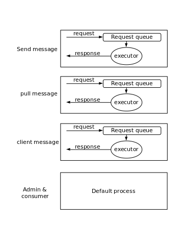

rocketmq broker模块
broker模块是rocketmq的核心。主要功能：
- RPC接口
- 管理消费者信息
- 管理消息
- 主重同步
- 状态统计

MessageStore
RemotingServer
处理请求的模块。包含：
- 发消息
- 拉消息
- 消费者管理
- admin请求
- 事务
- 与namesrv/filterserver连接的客户端管理
分几类请求，每类请求有自己的请求队列以及相应的处理请求的线程池，通过请求编码来绑定队列和线程池。

协议
长度头的方式。
|<-- 4 byte -->|<-- 4 byte --> |<-------------- data -------> |
+--------------+------------------+-------------+----------------+
| total length | header length | header data | body data |
+--------------+------------------+-------------+----------------+
数据封包
- JSON，默认
- ROCKETMQ，按照字段类型封包
BrokerOuterAPI
broker和namesrv以及主broker通信的API。主要包含：
- 向namesrv注册broker
- 向主broker拉取订阅信息
- 向主broker拉取topic信息
PullRequestHoldService
当broker接收到拉取消息的请求，当前执行请求的时候，没有找到消息，同时判断消息在后面一段时间能够取到，该消息就会被本模块处理，也就是放入一个队列一段时间以后再处理。
再次拉取的条件
- 请求的偏移量比当前的偏移量大
- 请求偏移量偏移量为0
- 请求没有匹配到
- 请求偏移量下面的数据找不到
拉取时间
- 长模式，5秒，默认模式
- 短模式，1秒
ClientHouseKeepingService
负责清理broker和其他模块的异常连接，主要包括跟生产者、消费者以及FilterServer之间的连接。
BrokerStatsManager
管理broker统计信息。定时统计各种指标比如：tps/消息总数。
FilterServerManager
负责通过JAVA代码过滤消息。提供拉取消息和注册过滤消息的JAVA代码的接口。
BrokerFastFailure
每10ms检查等待写盘的消息，在磁盘IO过载或者等待时间过长情况下，返回系统繁忙。
- 写消息的时候会有一个锁，当锁的时间过长时，表示系统页刷盘太慢，IO过载。这时，broker会把没有处理的消息都以系统繁忙的状态返回，直到系统恢复正常。
- 检查发送消息的队列，把等待时间过长的消息以系统繁忙的状态返回，直到发送消息的队列为空为止。
其他
broker还会周期性做其他事情
- 持久化消费进度
- 记录broker昨天和今天的生产和消费消息的总数
- 持久化消费者的过滤条件
- 保护broker：禁止消费进度大大落后当前消息的进度的消费者，原因会导致内存只为为这样的消费者使用，导致内存使用率太低，影响性能
- 打印当前broker的性能水位：生产队列，消费队列的数量，以及他们的队首消息的延迟时间
- 没有被索引和简历消费队列的消息量（大小）
- 如果没有配置namesrv，获取namesrv列表
- 如果是slave broker，从master broker同步：topic、消费者进度、订阅信息、延迟级别对应的延迟时间配置